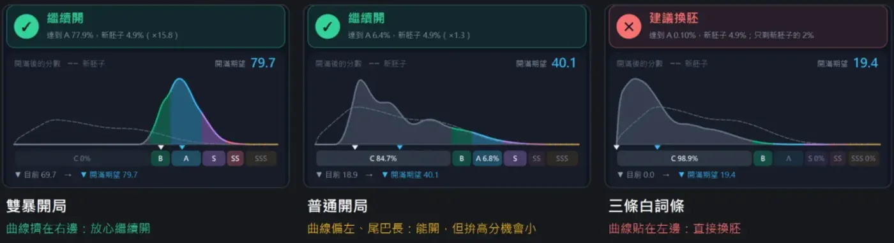
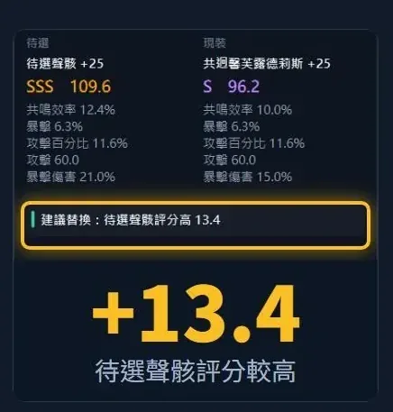
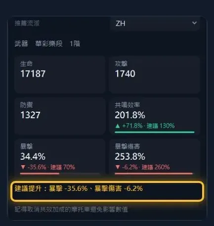

01開孔前先看機率
如果開滿也贏不過現裝，就先把資源留著。
刷聲骸不用再 Alt + Tab 切視窗算分數。開著遊戲點一下聲骸，評分、止損建議、開滿會落在哪，直接浮在畫面旁邊。
用手機在看？這是電腦用的工具，手機先收藏起來，回電腦再下載。想現在就評分，可以用網頁版聲骸分析儀上傳截圖 →

還沒開滿也能看。HUD 會把現在的分數、還能拿多少、已經虧掉多少，一次攤開給你。

▲ 開到 +15 的示範聲骸：期望 67.6，建議不要繼續（點圖放大）
GameZH 首創的開滿落點圖：每一孔都照官方公開機率計算，一張圖看出這顆胚子值不值得開。

▲ 目前 69.7 分，開滿期望 79.7，達到 A 的機率 77.9%

以下都是實際介面截圖。
如果開滿也贏不過現裝，就先把資源留著。

打開換裝比較，馬上知道差幾分，不用自己對數字。

紅色就是不夠。聲骸算得再細，最後還是要回到角色的總面板。

右下角是「卸下」的聲骸，才會存進配裝，整套練度一次看。

辨識不對就暫停手動改數值，評分即時更新。

單角色、全角色共 14 款分享圖，也能匯出 Excel 自己整理。練完直接丟群組分享。
從 Microsoft Store 安裝，或到 Google 雲端下載安裝檔。
加入 ZHDC 社群，在任一頻道輸入 /授權碼。
打開 HUD 貼上授權碼驗證登入，就能開始用。
沒有授權碼也能用「訪客模式」，只是權重要自己設定。遇到問題可以到 Discord 或巴哈文章留言，附上角色和截圖會比較快找到問題。
就像開 Discord 懸浮窗或 OBS 擷取畫面一樣，透過畫面辨識文字，再把計算結果顯示在視窗上。遊戲照常跑。
分數只是輔助，不是拿來比較誰比較強。我做這個工具的初心，一直都只是希望大家養聲骸的時候，可以少走一點冤枉路。
覺得哪裡算錯、哪裡不好用，直接告訴我是哪個角色、哪個地方，我會認真看。如果它有幫到你，留句話跟我說一聲，就是繼續做下去的動力。
看巴哈姆特完整介紹文 →
裝好、領授權碼，回遊戲點一下聲骸就能用。